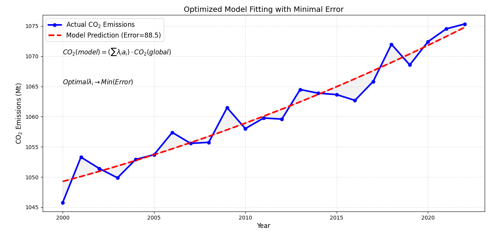

In order to determine the weights, we use our model to fit the actual carbon emission data.
\[ \textnormal{CO}_2 ( \textnormal{model} ) = (\lambda_1 a_1 + \lambda_2 a_2 +\lambda_3 a_3+...+\lambda_n a_n ) \cdot \textnormal{CO}_2( \textnormal{global} ) \] \[ a_1 = \frac{\sum_{t= \textnormal{hist} }^{t=0} \textnormal{GDP}_c}{\sum_{t=\textnormal{hist}}^{t=0} \textnormal{GDP}_w} \] \[ a_2 = \frac{\sum_{t= \textnormal{hist} }^{t=0} \textnormal{Population}_c}{\sum_{t=\textnormal{hist}}^{t=0} \textnormal{Population}_w} \]Where \( a_i \) represents the factor by which the \( CO_2 \) emissions of the i-th influencing country compare to the world's \( CO_2 \) emissions, and the corresponding weight like \( \lambda_i \) we need is when the amount of carbon dioxide in our model approaches the actual carbon dioxide emissions.
And we will use Machine Learning Linear regression to calculate \( \lambda_i \), so that we can make the error is the smallest.
\[ \textnormal{Error} = \sum_t(\textnormal{CO}_2(\textnormal{model})-\textnormal{CO}_2(\textnormal{global}))^2 \] 1. Overall formula
\[ \textnormal{Offset}_c = \left( \frac{V_c}{\sum_{j=1}^n V_j} - \frac{I_c}{\sum_{j=1}^n I_j} \right) \cdot \textnormal{Global Fund} \] \[ \textnormal{Global Fund} = \textnormal{Average CO2 price} \cdot \textnormal{CO2 over-emission} \]2. Factor analysis
\[ R_c = (\lambda_1 a_1 + \lambda_2 a_2 +\lambda_3 a_3+...+\lambda_n a_n) \cdot \textnormal{CO}_2(w) \]3. Index of Responsibility (modified)
\[ I_c = \frac{R_c \, (\textnormal{fact} \, \textnormal{CO}_2)}{\, R_c} - 1 \]4. Introduction to variables
- \(V_c\) : means the vulnerability of the country.
- \(R_c\) : means the theoretical emissions CO2.
- \(R_c \, (\textnormal{fact} \textnormal{CO}_2) \) : means the practical emissions CO2.
- \(\textnormal{CO}_2(w)\) : means the global carbon budget